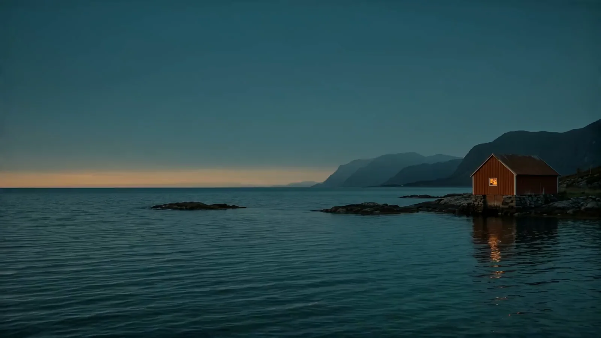
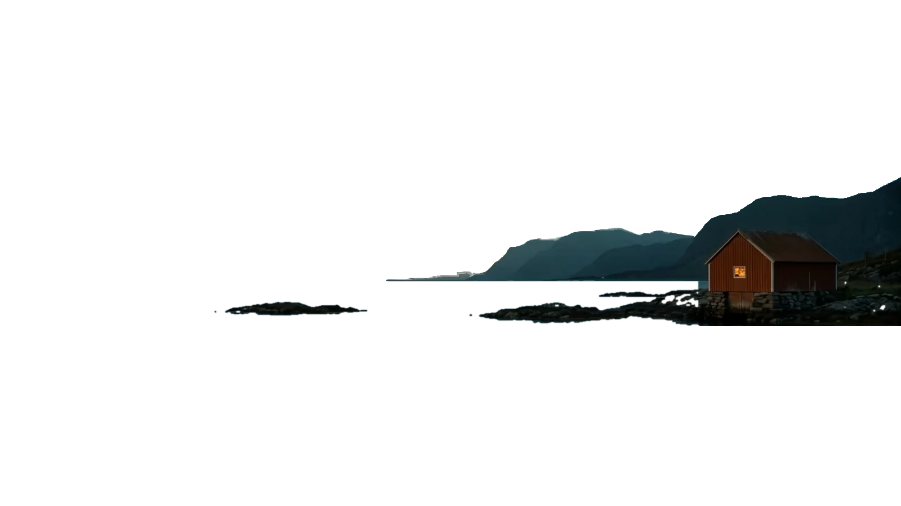

Nettsider, apper og digitale verktøy
Christian Hermansen

Bergen
Jeg lager nettsider, apper og digitale verktøy.
For arrangører, lag, foreninger og små bedrifter.
Tegnet for deg, og bygget for hånd i Bergen.
Arbeidet i bevegelse.
Vises nå